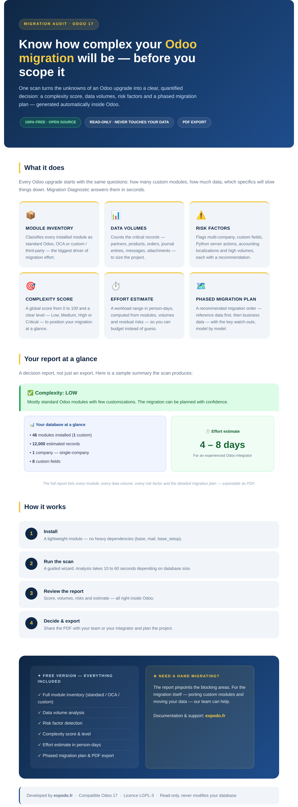

Migration Diagnostic audits the feasibility of an Odoo migration in under a minute. It scans your database and produces a clear, quantified decision report: a complexity score (0 to 100), data volumes, risk factors and a phased migration plan, exportable as PDF. The scan is read-only and never modifies your data.
Key features:
Free and open source (LGPL-3). Compatible with Odoo 17.0. Developed by expodo.fr.